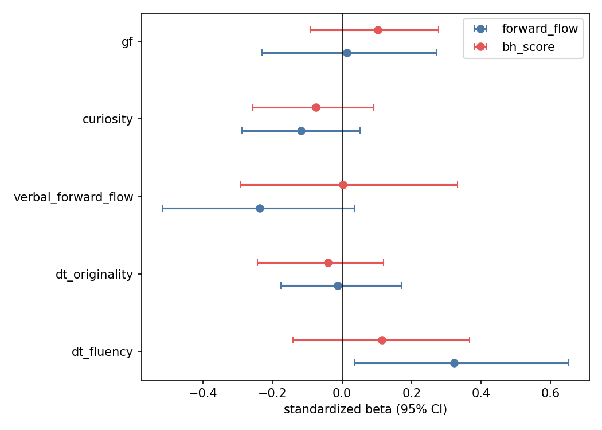
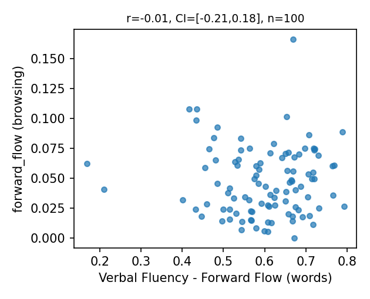

dt_fluency) - נקשר ל-forward_flow ברמה מובהקת נומינלית (β=+0.32, 95% CI [+0.036, +0.653], לא חוצה אפס), ובכיוון שניבאנו (Dancer ולא Hunter-Busybody).forward_flow: -0.304, bh_score: -0.133) - אין ערך ניבוי מחוץ למדגם - וה-permutation ברמת המודל לא מובהק (p=0.238 / p=0.580).Zhou et al. (2024) גזרו את כל סגנונות הסקרנות מתוך הגלישה עצמה. במאגר הזה יש מבחני יצירתיות חיצוניים (AUT, AQT, שטף מילולי), כך שאפשר לבדוק לראשונה אם תכונת יצירתיות מנבאת את ארכיטקטורת הגלישה.
יצירתיות מנבאת את forward_flow (Dancer) אבל לא את bh_score (Hunter-Busybody). מבוסס על כך שבמאמר ρ(forward_flow, bh_score)=-0.05.
Verbal Fluency - Forward Flow (על מילים) מנבא את forward_flow בגלישה (על עמודים): אותו construct, שני תחומים.
5 קומפוזיטים (z-score ואז ממוצע): חשיבה מתבדרת-כמות, חשיבה מתבדרת-איכות, Verbal Forward Flow, Curiosity, Gf (בקרה). רגרסיה מתוקננת לכל מטרה עם bootstrap CI, R² ב-cross-validation, ו-permutation ל-p. בדיקת חוסן: PCA על 13 המדדים הגולמיים.

forward_flow (Dancer): R²cv=-0.304, R²full=0.068, perm p=0.2378, n=100bh_score (Hunter-Busybody): R²cv=-0.133, R²full=0.036, perm p=0.5797, n=107dt_fluency: β=+0.323, 95% CI [+0.036, +0.653]dt_originality: β=-0.012, 95% CI [-0.177, +0.171]verbal_forward_flow: β=-0.237, 95% CI [-0.518, +0.035]curiosity: β=-0.118, 95% CI [-0.288, +0.053]gf: β=+0.013, 95% CI [-0.231, +0.272]dt_fluency: β=+0.114, 95% CI [-0.141, +0.367]dt_originality: β=-0.040, 95% CI [-0.243, +0.119]verbal_forward_flow: β=+0.002, 95% CI [-0.291, +0.333]curiosity: β=-0.075, 95% CI [-0.256, +0.092]gf: β=+0.103, 95% CI [-0.092, +0.277]מתוך כל הבדיקות, יצא מקדם אחד שנראה כמו ממצא: ככל שאדם מייצר יותר רעיונות במבחני היצירתיות, כך הוא נוטה לעשות קפיצות סמנטיות גדולות יותר בגלישה (ה-forward_flow). רווח הסמך שלו לא חוצה אפס, אז במבט ראשון זה נראה אמיתי.
הבעיה: תכננו מראש ארבע בדיקות שתפקידן בדיוק לסנן ממצא מקרי, וכולן נכשלות:

Pearson: r=-0.014, 95% CI [-0.210, 0.183], p=0.8908, n=100Spearman: ρ=0.038, p=0.7102אותן רגרסיות עם רכיבי PCA במקום הקומפוזיטים. שונות מוסברת: 0.28, 0.20, 0.10.
forward_flow (PCA): R²cv=-0.195, R²full=0.022, perm p=0.5337, n=100bh_score (PCA): R²cv=-0.039, R²full=0.046, perm p=0.1844, n=107forward_flow חסר ל-7 משתתפים (פחות מ-2 עמודים נושאיים).טיוטה קצרה לסיכום מה שעשינו על הדאטה. אפשר להעתיק ולערוך לפי הצורך.
נושא: עדכון - ניתוח דאטה הגלישה והיצירתיות (N=107)
יועד שלום,
רציתי לעדכן על מה שעשינו עם הדאטה - הגלישה בוויקיפדיה לצד מבחני היצירתיות.
בשלב ראשון הרצנו EDA רחב: כ-195 מתאמי Spearman בין 13 מדדי יצירתיות וקוגניציה ל-15 מאפייני גלישה, עם תיקון BH-FDR. אף מתאם לא שרד את התיקון (0 מתוך 195). זה null כן, מוגבל בעיקר על ידי גודל המדגם והעונש על ריבוי ההשוואות.
בשלב שני מיקדנו לשאלה כיוונית אחת, כאימות חיצוני ל-Zhou et al. (2024): האם תכונת יצירתיות מנבאת את ממד ה-Dancer (forward_flow) ולא את ממד ה-Hunter-Busybody? היתרון של הדאטה שלך הוא בדיוק שיש בו מדדי יצירתיות חיצוניים, של-Zhou לא היו.
התוצאה: רמז חלש אחד ובכיוון הנכון - מקדם של שטף חשיבה מתבדרת מול forward_flow יצא מובהק נומינלית - אבל הוא לא שורד אף אחת מבדיקות החוסן שתכננו מראש: לא cross-validation, לא permutation ברמת המודל, ולא בדיקת PCA. בנוסף, מבחן ה-convergent validity (forward flow מילולי מול forward flow בגלישה) יצא אפס.
המסקנה הזהירה: אין במדגם הזה עדות משכנעת לכך שתכונת יצירתיות מנבאת את ארכיטקטורת הגלישה. אשמח לחשוב יחד על המשך - למשל מדגם גדול יותר, או חישוב forward_flow על מסלולי גלישה ארוכים בלבד כדי להפחית רעש.
תודה,
אלעי
חשוב להבהיר: 15 המאפיינים האלה אינם מהניתוח של יועד. יועד נתן את הדאטה הגולמי (יומני ביקורים, חיפושים, ועמודים). את המאפיינים הנדסנו אנחנו מתוך הדאטה הזה, בצינור yoed_eda (s3 + features.py + m83_utils). מטריקות הגרף, forward_flow ו-bh_score מגיעות דרך m83_utils - כלומר מאותה מסגרת Zhou שכבר יושמה בעבודת ה-M83 על הדאטה המקורי.
mean_step_distance - מרחק קוסינוס סמנטי ממוצע בין שני עמודים עוקבים.var_step_distance - שונות אותו מרחק.forward_flow - מרחק סמנטי ממוצע בין העמוד הנוכחי לכל קודמיו. מדד ה-Dancer של Zhou.m83_utils)הגרף: העמודים הייחודיים כצמתים, וקשת בין שניים אם באחד יש קישור לשני. אלה הרכיבים של ציר ה-Busybody-Hunter.
bh_score - ציון Hunter-Busybody, z-score בתוך הקוהורט (מורכב מהארבעה כאן).clustering - מקדם clustering של הגרף.global_efficiency - יעילות גלובלית של הגרף.char_path_length - אורך מסלול אופייני.n_pages - מספר עמודים שנצפו (כולל חזרות).n_unique_pages - מספר עמודים ייחודיים.n_searches - מספר חיפושים.revisit_rate - שיעור חזרות: (n_pages - n_unique) / n_pages.search_vs_link_ratio - יחס חיפוש מול קליק על קישור: n_searches / n_pages.mean_dwell - זמן שהייה ממוצע בעמוד.var_dwell - שונות זמן השהייה.path_breadth - מספר הקטגוריות הייחודיות שכל העמודים נגעו בהן.mean_dwell ו-var_dwell נגזרים מ-start_time עוקבים (לא נמדדו ישירות), ולכן רועשים יותר.yoed_eda/scripts/s8_creativity_predicts_architecture.py, creativity_model.pyyoed_eda/output/creativity_architecture.jsondocs/superpowers/specs/2026-06-17-creativity-predicts-browsing-architecture-design.md